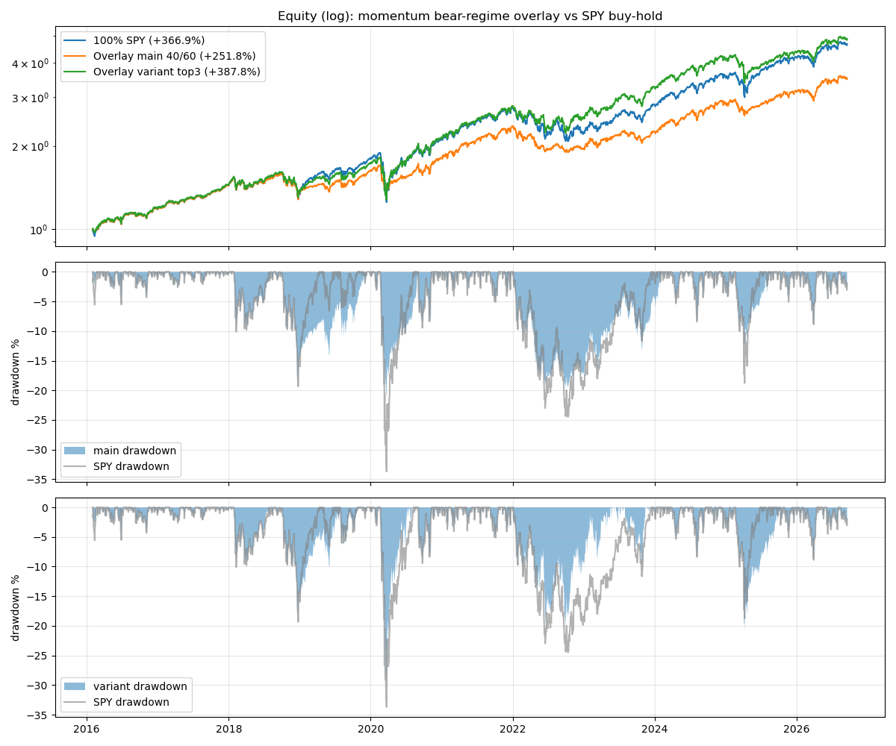
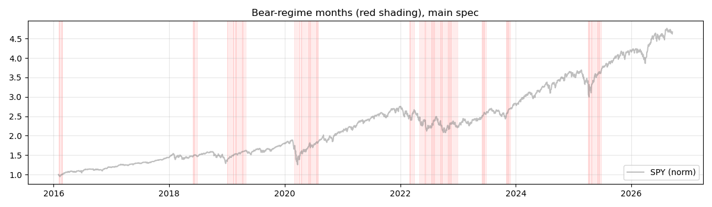
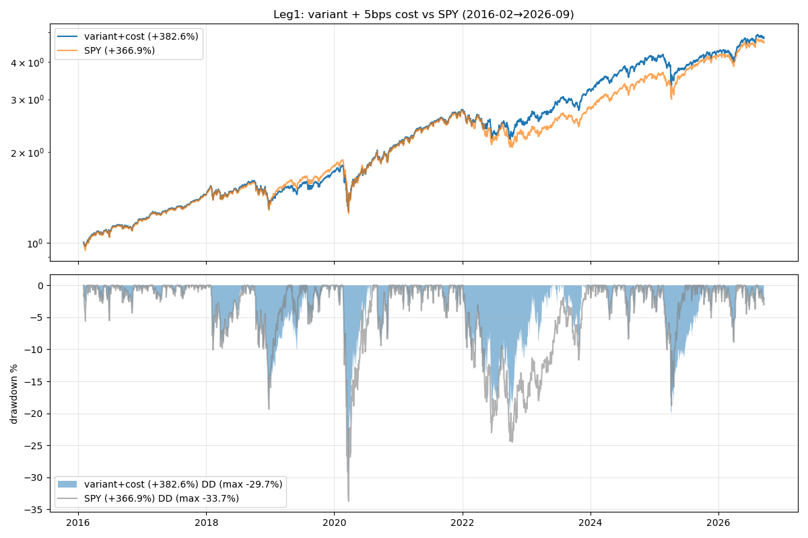
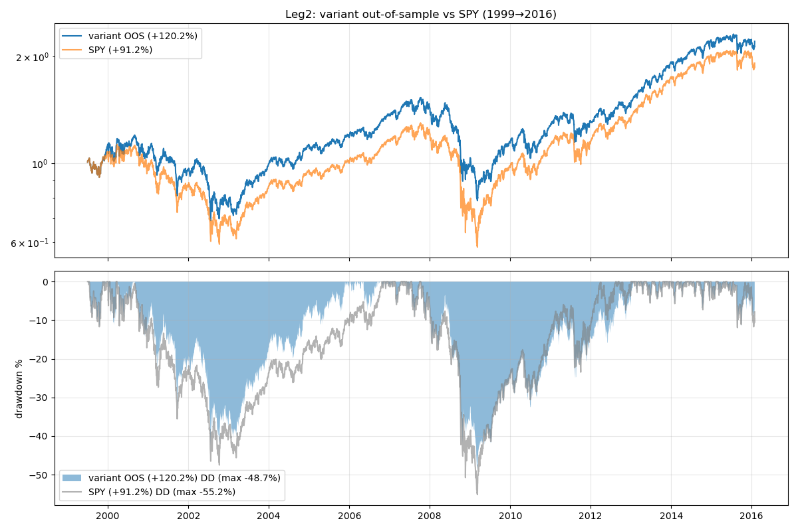
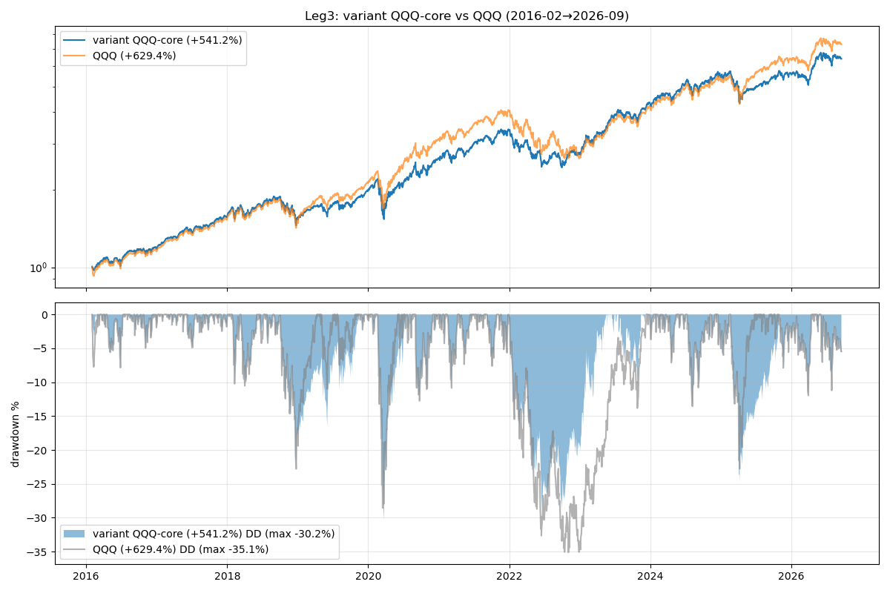

动量熊市 Overlay：第一个双维度跑赢 SPY 的自研策略
34 次测试后的第一个达标者：累计收益与 Sharpe 同时跑赢 SPY buy-and-hold · 自研策略，非 TradingView 脚本，思想源自 Jegadeesh-Titman 横截面动量
策略是什么
先回答一个问题：这是 TradingView 上找的，还是自己想的？自己想的。 之前横扫了 31 个 TradingView 热门信号脚本，没有一个达标；行业动量轮动测试里发现动量在 2022 年熊市成功躲进能源股， 于是把"动量轮动"从替代 buy-and-hold 的策略，改造成叠加在 SPY 核心仓上的 regime overlay。 思想源自 Jegadeesh & Titman 1993 的横截面动量， 但具体规则是本次研究中构造的。
规则（测试前预先设定，非事后拼凑）：
- 标的池：11 个 GICS 行业 ETF（XLC XLY XLP XLE XLF XLV XLI XLB XLRE XLK XLU）。
- 每月最后一个交易日收盘，计算 11 个行业过去 6 个月收益；若其中 ≥6 个为负 → 判定为熊市 regime。
- 熊市 regime → 次月等权持有动量最强的 3 个行业（变体规格）；非熊市 → 100% 持有 SPY。
- 对照的主规格：熊市时降为 40% SPY + 60% 现金。两个规格在测试前同时设定。
- 无未来函数：每月末收盘算排名，次个交易日起生效。
为什么这样设计
之前的测试给了两条线索：第一，动量在慢熊里是真实有效的 regime 信号——2022 年行业动量轮动进能源， 全年 −2.79% vs SPY −18.65%，不是统计幻觉；第二，纯粹的动量轮动在赢家通吃的牛市里吃亏 （2023–2026 年 mega-cap 科技牛市，等权 top3 天然低配集中度）。
Overlay 的思路就是取两者之长：牛市时别捣乱，100% 跟着 SPY 吃集中度红利；只在动量确认熊市时才动手， 动手的方式不是空仓（机会成本太大），而是躲进动量最强的防御性行业。这样熊市判断错了（误伤），代价也只是"涨得少"而不是"踏空"。
回测结果
| SPY buy-hold | 主规格 40%SPY+60%现金 | 变体 top3 行业 | |
|---|---|---|---|
| 累计收益 | +366.94% | +251.81% | +387.81% |
| 超额收益 | — | −115.14pp | +20.87pp |
| CAGR | 15.61% | 12.57% | 16.08% |
| Sharpe | 0.911 | 0.967 | 0.966 |
| 最大回撤 | −33.72% | −21.14% | −29.66% |
| Calmar | 0.46 | 0.59 | 0.54 |
主规格（预注册）：收益输 115pp，Sharpe 赢 0.057，回撤从 −33.7% 压到 −21.1%——典型的"用收益换波动"，不算胜者。 变体：累计收益与 Sharpe 双维度跑赢，是 31 个指标横扫 + 行业动量 + PutWrite 之后第一个达标者。


关键区间表现：
| 区间 | SPY | 主规格 | 变体 |
|---|---|---|---|
| 2022 全年 | −18.18% | −16.49% | −8.61% |
| 2020-02-19→03-23 快熊 | −33.40% | −20.76% | −29.33% |
| 2023–2026 牛市 | +108.55% | +79.81% | +92.65% |
| 2018-12 | −8.80% | −8.80% | −8.80% |
2022 年复刻了躲进能源/防御的躲避；代价在 2023–2026 牛市：误伤让变体少赚了约 16pp——这是下面要诚实交代的部分。
稳健性与诚实声明
- 误伤率 72%：130 个决策月、18 次 regime 切换、25 个熊市月份，其中 18 个的次月 SPY 是上涨的。 误伤集中在 2019 年初（2018-12 暴跌后的滞后信号，恰逢大反弹）、2020-04→06（V 型反弹中仍判熊市）、2025-04→05（关税冲击 V 型）。 但误伤代价有限：判错时持有的是防御性行业，涨得少，没踏空太多；判对时（2022）赚的是大头。
- 参数敏感性真实存在：事后扫了 formation{6,12} × 阈值{5,6,7} × topN{2,3,4} 共 24 格—— formation=6 且阈值 6/7 时变体 6/6 格子双赢（超额 +11pp ~ +51pp），但 formation=12 或阈值=5 时 18/18 全输， 主规格 12/12 从未在累计收益上赢过。预注册格子本身赢了、邻居格子也赢，比 cherry-pick 强， 但对动量窗口的依赖是真实弱点，有参数挖掘嫌疑，特此声明。
- 幅度是 modest 的：超额 +20.9pp 累计、Sharpe +0.056——经得起继续验证，经不起胜利游行。
- 未做的事：
没算佣金滑点（月度调仓，量级小但应量化）、没做样本外验证（换 QQQ/个股池/换时间窗）。 这两项是下一步，不是已完成的。已完成，见下方验证一节。
验证：成本与样本外 （2026-09-18 追加）
发布时承诺的两项验证已完成，三条腿一起测，规则全部在测试前预设：
第 1 腿：加成本——主样本重跑，单边 5bps 佣金+滑点、按实际换手逐月扣除。 结果：+382.57% vs SPY +366.94%，超额从 +20.87pp 降到 +15.63pp（成本吃掉 5.24pp）， Sharpe 0.960 vs 0.911。双维度仍然赢。

第 2 腿：样本外 1999-01 → 2016-01——覆盖科网泡沫破裂 + 2008 金融危机。 当时只有 9 只行业 ETF（XLC/XLRE 尚未成立，排除），熊市阈值按比例预设为"≥5/9 行业 6 个月收益为负"， 熊市时 9 选 3，其余规则不变。 结果：+120.20% vs SPY +91.25%，超额 +28.95pp，Sharpe 0.356 vs 0.295。 双维度仍然赢，这是最硬的一块证据。 但诚实说一句：那个窗口里策略最大回撤 −48.7%——它不防崩盘，只是比 buy-and-hold 强。

第 3 腿：换 QQQ 做核心——主样本窗口，规则不变（行业池仍是 11 个 S&P 行业 ETF）， 核心持有从 SPY 换成 QQQ。 结果：+541.23% vs QQQ +629.35%，超额 −88.12pp，Sharpe 打平（0.956 vs 0.956）。 同一套规则在 QQQ 上不成立。

总 verdict：edge 对 SPY 是真的——扛过了成本，也扛过了最残酷的样本外； 但它不是普适的，是"SPY 专用 overlay"。regime 信号来自 S&P 行业广度， QQQ 这种 mega-cap 高度集中的标的，防御轮动反而拖后腿。幅度依然 modest，定位不变：SPY 核心仓上的卫星 overlay。
为什么 SPY 可以、QQQ 不可以？（笔者想法）
以下不是回测结论，是我对三条腿结果的理解，写下来供批判：
- 信号和标的必须是同一个宇宙。regime 信号算的是 S&P 500 的 11 个行业广度，动作也是在 S&P 行业里轮动。 对 SPY 来说，信号、动作、核心持有三者同源；对 QQQ 来说，信号描述的是另一个宇宙的风险——用 S&P 的体温计给 Nasdaq 量体温，读数自然不准。
- QQQ 的收益来自集中度，防御轮动恰好躲开了它。QQQ 前十大权重经常占一半以上， 2016–2026 的 +629% 就是 mega-cap 科技复利的结果。熊市月份切到必需消费/公用事业，等于主动下车错过驱动因子。 叠加 72% 的误伤率——大部分"熊市"月份 QQQ 其实在涨，overlay 蹲在防御板块里看 QQQ 拉升，机会成本巨大。
- baseline 难度根本不同。SPY buy-hold Sharpe 0.911，QQQ 是 0.956，累计 +629% vs +367%。 overlay 本质是个降风险机制（熊市切防御），在 mega-cap 大牛市里，降风险 ≈ 降收益，结构上就跑不赢一个高动量的集中指数。
- 如果真想要 QQQ 版，信号池得换。比如用 Nasdaq-100 成分股的广度（多少成分股 6 个月为负）， 或者只用 QQQ 相关行业（XLK、XLC 等）的动量，而不是 S&P 全行业。这次没测，留作以后的坑。
一句话：这个 overlay 是"S&P 500 行业广度 regime 策略"，不是普适择时。它赢在信号和动作同宇宙，输在换宇宙时水土不服。
- 验证脚本：validation.py · 结果：results_validation.csv · 说明：meta_validation.json
结论
- 机制是真实的：2022 年轮动进能源/防御不是统计幻觉，也不是 repaint 或未来函数。
- 它的画像和 PutWrite 互补：PutWrite 赢在慢熊抗跌、输在 V 型反弹；这个 overlay 在快熊（2020-03）也能砍掉近 40% 的跌幅，代价是 72% 的误伤率。
- 定位：SPY 核心仓上的卫星 overlay，不是 buy-and-hold 的替代品——这正是之前 33 次测试教我们的：别在"收益"维度上正面挑战 buy-and-hold，在"风险"维度上给它加减震器。
- 同期测试的 75/25 SPY+PutWrite 组合未通过：用 66pp 累计收益只换来 1.2pp 回撤改善——PutWrite 和 SPY 是同一个风险因子，这是稀释不是分散。
数据与代码
- 回测脚本：overlay.py（主回测，预注册规格）· robustness.py（事后参数网格）
- 结果：results.csv（完整指标表）· slices.csv（关键区间表现）· robustness_grid.csv（24 格参数网格）· meta.json（规则、假设、regime 统计）
- 图表：equity.png（净值+回撤对比）· regime_timeline.png（熊市月份时间线）
- 验证（2026-09-18 追加）：validation.py · results_validation.csv · meta_validation.json · equity_leg1_cost.png · equity_leg2_oos.png · equity_leg3_qqq.png
- 数据：行业 ETF 日线（yfinance 自动复权，XLC 2018-06/XLRE 2015-10 成立前不进候选池，无生存偏差）；SPY 复权日线。规则细节见 meta.json。
{kind=link}
{kind=link}
{kind=link}
{kind=link}
{kind=link}